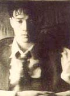

박학기 고백(Go Back)콘서트

80년대 후반에 가수로 데뷔, ’향기로운 추억’ 등 지금까지 부드러운 포크발라드 노래로 사랑 받고 있는 박학기가 오는 2월 13-25일 서울 대학로 컬트홀에서 「Go Back」이라는 제목으로 콘서트를 갖는다.이 공연에는 동료가수 김장훈, 유리상자, 조규찬, 권진원, 여행스케치, 이정열,한동준 등이 우정 출연한다.
평일 : 오후 7시30분 토요일과 일요일 : 오후 4시, 오후 7시30분 공연.